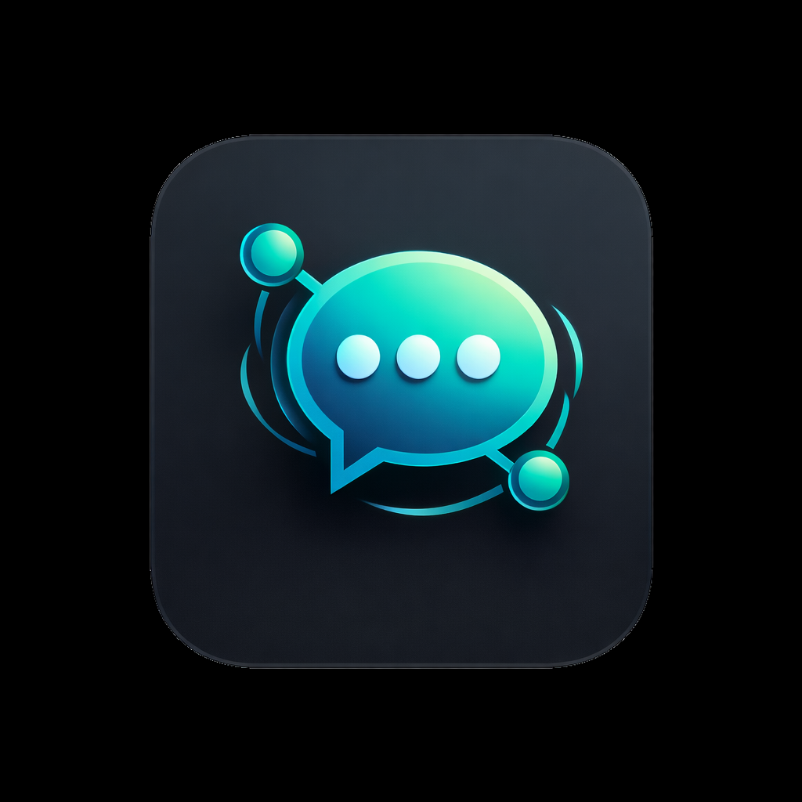
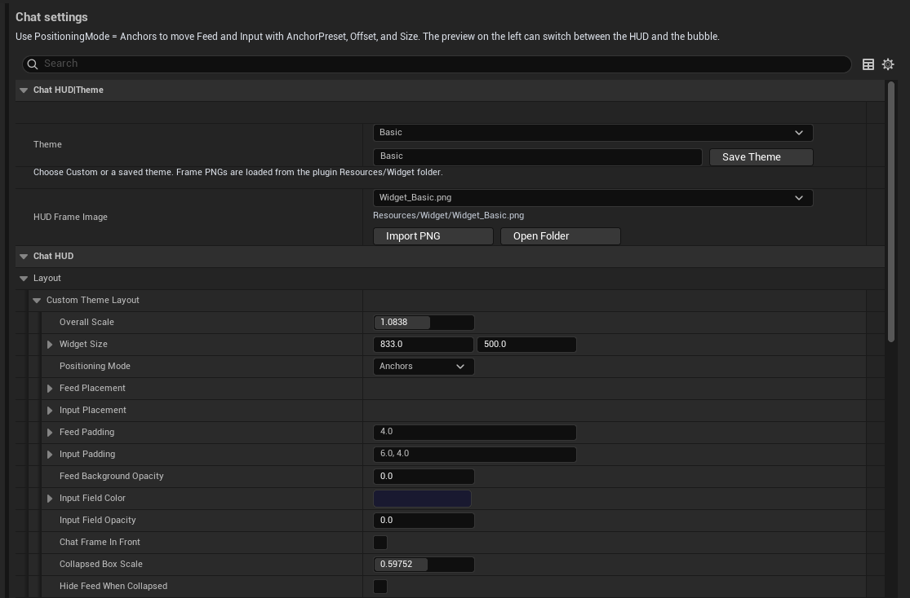
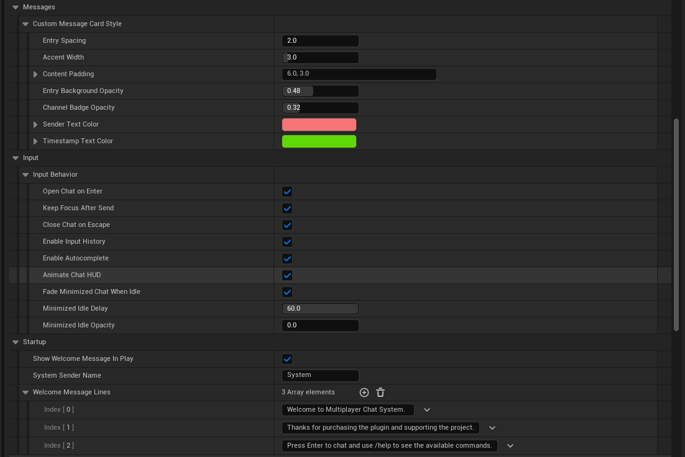
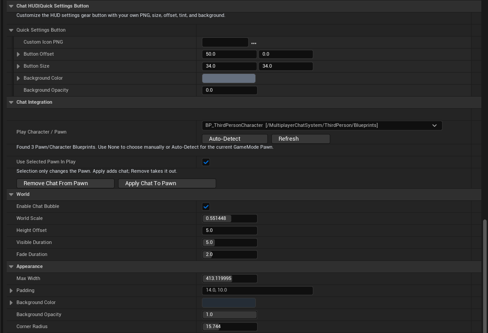
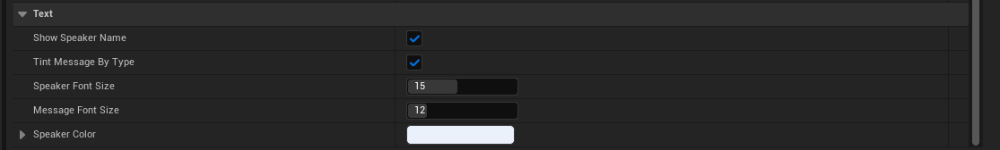

Chat HUD
Preset themes ship with editable layout, typography, message styling, collapsed behavior, and quick settings button customization.

Multiplayer Chat System Documentation GitHubUnreal Engine 5.7 plugin by EosSpirit
Multiplayer Chat System gives teams a source-available chat workflow for Unreal projects: replicated public history, whisper and yell commands, world-space bubbles, a native C++ HUD, and an in-editor designer for fast iteration.
Overview
/say, /yell, and /whisperQuick Start
GameState inherit from AChatSystemGameState.PlayerController inherit from AChatSystemPlayerController.Project Settings -> Plugins -> Multiplayer Chat System -> Chat Integration.UChatComponent and UChatBubbleComponent to that blueprint.OpenChat to FocusChatInput() and CloseChat to ReleaseChatInputFocus().Enter to open or send chat, and Escape to close chat.GameState -> AChatSystemGameState
PlayerController -> AChatSystemPlayerController
Pawn / Character -> UChatComponent + UChatBubbleComponentOpenChat -> FocusChatInput()
CloseChat -> ReleaseChatInputFocus()
Enter -> submit message
Escape -> exit chat mode (if enabled)Input mappings are not auto-created by the plugin. The recommended flow is to define your chat buttons first, then test focus, send, and close behavior in Play.
Commands
| Command | Purpose |
|---|---|
/help, /?, /commands |
Shows the available chat commands and emotes. |
/g, /global, /s, /say |
Sends a public message to the shared feed. |
/y, /yell |
Sends a proximity-based message using the configured yell range. |
/w Name message, /whisper |
Mirrors a private message between sender and target only. |
| Text / animation emotes | Uses the built-in emote tables configured in the plugin. |
Whispers are resolved deterministically: no match returns an error, one match delivers normally, and duplicate names are treated as ambiguous instead of choosing a target at random.
Visual Systems
Preset themes ship with editable layout, typography, message styling, collapsed behavior, and quick settings button customization.
Control world scale, height offset, duration, fade, width, rounded corners, background tint, speaker visibility, and text sizing.
Players can locally adjust animation, feed opacity, idle fade, and spacing without changing your authored theme.
Settings Guide
The screenshots below follow the same order as the in-editor workflow. Use them as a quick visual reference while tuning the HUD, messages, quick settings gear button, integration, and world chat bubbles.

Screenshot 1
This block defines the overall look of the chat window before you start tuning the smaller details.
Resources/Widget.
Screenshot 2
This area controls readability, how the chat feels while typing, and what players see when a session starts.

Screenshot 3
This block connects the plugin to your playable character and defines how the world bubble behaves in 3D space.

Screenshot 4
This final block controls how the player name and message text are drawn inside each world bubble.
Designer Workflow
Use Window -> Multiplayer Chat Designer to open the larger workspace.
Toggle between the chat HUD preview and the chat bubble preview while editing.
Adjust anchors, offsets, sizes, frame images, rounded bubbles, and message styling with immediate feedback.
The plugin locks unsafe settings edits during Play In Editor and Simulate to avoid crashes and accidental asset mutation.
Architecture
UChatComponent validates commands, ranges, length, and whisper resolution on the server.
AChatSystemGameState stores public message history with replicated sequence IDs.
The plugin keeps the current public API intact while using event-based delivery to avoid fragile polling paths.
Testing & Packaging
Binaries and IntermediateDocs/FABFAQ
Yes. The plugin exposes theme, typography, layout, bubble, and quick settings button controls through Project Settings and the live designer window.
Yes. The HUD theme supports PNG frame images, and the quick settings button can use a custom icon image as well.
Yes. Public history is replayed through the replicated GameState history, while live-only bubble events remain protected from history replays.
Yes. The Chat Component includes a configurable display name that is used by chat, whispers, connected-name lists, emotes, and world bubbles.
Support